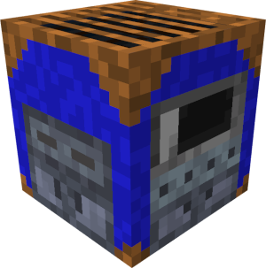
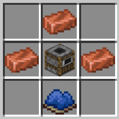

Deep Blue Grill

Use
The Deep Blue Grill is an essential block used to cook and process all of the items added by Blue Depths. Without it, you cannot cook tuna fillets into tuna steaks, process nematocyst gel into slimeballs, etc. It can also function as a normal smoker to cook food from vanilla Minecraft.
Current Use
For versions 1.2.0 and above, the Deep Blue Grill can take up to 3 types of fuel sources: coal, charcoal, and sticks. Coal and charcoal can be used to cook in multiples of 8 for food items, and won't consume less than 8 food items. The food is cooked instantly, but doesn't give XP. Any remaining food items will remain uncooked, and any extra coal will not be consumed.
An example of how this works for the coals is like this: imagine you place 25 raw catfish inside the grill with 3 coal. The output of the grill will be 24 cooked catfish, 1 raw catfish, and 0 leftover coal.
For sticks it is much simpler. Sticks are used to cook any leftover food items, or if you want to cook 7 or less food items. You need 2 sticks to cook one single food item, and it will consume all of the sticks. So if you want to cook 7 raw catfish, you would need 14 sticks.
For obtaining other items through the Deep Blue Grill, you can look at the following links:
For versions 1.1.0 and below
For older versions of Blue Depths like 1.1.1 and below, the way to cook food is much stricter than with other food sources in Minecraft. In most cases, you can only cook the bass as 1, 8, 16, or 64 using either sticks (only if you want to cook one item), coal, or charcoal as fuel. This mostly applies for obtaining the following food sources:
Below shows an example on how to use the Deep Blue Grill, using the recipe for cooking raw catfish into cooked catfish:


Crafting the Deep Blue Grill
In order to obtain the Deep Blue Grill, players can craft it using a regular crafting table. The player only needs 3 copper ingots, blue dye, and a smoker. Below shows the crafting recipe for the Deep Blue Grill:

History
Development History
| Datapack Version | Addition/Change |
|---|---|
| 1.0.0 (Initial release) | Added the Deep Blue Grill with all functionality and crafting recipe |
| 1.1.0 (Roaring Rivers Part 1: Below the Surface) | Added the process of cooking the raw largemouth bass into cooked largemouth bass as a function to the grill |
| 1.2.0 (Roaring Rivers Part 1: Shocking Snap) | Reworked the functionality of the Deep Blue Grill. The grill no longer relies on the old restricted system of only cooking 1, 8, 16, and 64 food items. Players now have more freedom in being able to cook food items in more varying quantities with the different fuel sources. Cooking is more dynamic now. The processing system for the Nematocyst Gel and Sturgeon Scute has also been adjusted to replicate this new system. |